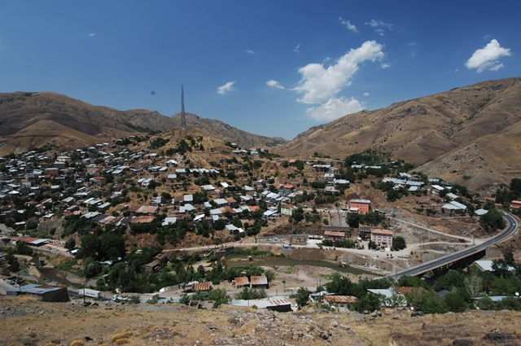
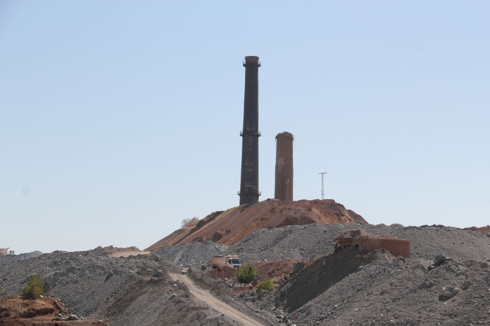
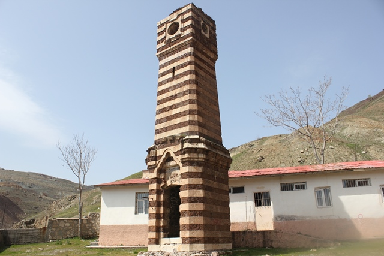

Maden Elazığ il merkezine 80 km uzaklıkta olup 2019 yılı verilerine göre nüfusu 11.275'tir.1927 yılında ilçe olup Elazığ'a bağlanmıştır.Bakır işletmesi ilçenin ekonomik açıdan can damarını oluşturur. İlçeye ulaşım kara ve demiryolu ile sağlanmaktadır.Gezin Beldesi turizm açısından önemli bir yere sahiptir.İsmini yöredeki bakır madenlerinden aldığı düşünülen Maden İlçesi'nin tarihi M.Ö. 2000 yıllarına kadar uzanmaktadir. Ancak bazı İngiliz kaynaklarında, insanoğlunun bakırı ilk kez M.Ö. 7000-8000 yılları arasında bu bölgede bulmuş ve işlemiş olduğu ifade ediliyor.Çok sayıda tarihi eser bulunan ilçede 1890 yıllarında yapıldığı bilinen Eski Hükümet Konağı ve Saat Kulesi ile 1872 yılında Sultan Hamit tarafından yaptırılmış olan Cami Kebir önemli eserler arasındadır.
Maden Elazığ il merkezine 80 km uzaklıkta olup 2019 yılı verilerine göre nüfusu 11.275'tir.1927 yılında ilçe olup Elazığ'a bağlanmıştır.Bakır işletmesi ilçenin ekonomik açıdan can damarını oluşturur. İlçeye ulaşım kara ve demiryolu ile sağlanmaktadır.Gezin Beldesi turizm açısından önemli bir yere sahiptir.İsmini yöredeki bakır madenlerinden aldığı düşünülen Maden İlçesi'nin tarihi M.Ö. 2000 yıllarına kadar uzanmaktadir. Ancak bazı İngiliz kaynaklarında, insanoğlunun bakırı ilk kez M.Ö. 7000-8000 yılları arasında bu bölgede bulmuş ve işlemiş olduğu ifade ediliyor.Çok sayıda tarihi eser bulunan ilçede 1890 yıllarında yapıldığı bilinen Eski Hükümet Konağı ve Saat Kulesi ile 1872 yılında Sultan Hamit tarafından yaptırılmış olan Cami Kebir önemli eserler arasındadır.


İlçede ayrıca kültür ve tabiat varlığı olarak korumaya alınmış Çitli Höyüğü ve Şeyh Muhammet Kattal Türbesi bulunuyor.
